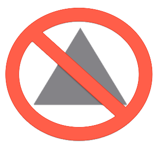
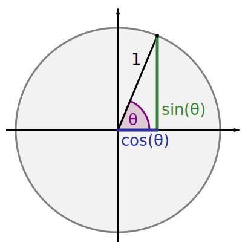

# Nehemiah #### presentes --- ## Made by Fitsum
# Trigonometry --- # What is it --- It has many definition many of you will know the definition that trigonometry is the study of triangles, but this is half the story trigonometry is also about ratios and also its about circles and rotations ---  <!-- <h1 class="r-fit-text">Triangles</h1> --> <!-- <div class="r-stack"> --> <!-- <img class="fragment custom blur1" src="./img/triangle.jpg" width="1000" height="700"> --> <!-- <img class="fragment" src="./img/circle.jpg" width="700" height="700"> --> <!-- <img class="fragment" src="https://placekitten.com/400/400" width="400" height="400"> --> <!-- </div> --> --- there are six functions that builds it --- <style> .fragment.blur { filter: blur(4px); } .fragment.blur.visible { filter: none; } .fragment.blur1 { filter: none; } .fragment.blur1.visible { filter: blur(40px); } </style> <section data-transition="zoom"> <p class="fragment custom blur highlight-blue fade-left">sine ($sin\theta$)</p> <p class="fragment custom blur highlight-red fade-left">cosine ($cos\theta$)</p> <p class="fragment custom blur highlight-green fade-left">tanget ($tan\theta$)</p> <p class="fragment fade-in-then-out">reciprocals</p> <p class="fragment custom blur highlight-blue fade-right">cosec ($csc\theta$)</p> <p class="fragment custom blur highlight-red fade-right">sec ($sec\theta$)</p> <p class="fragment custom blur highlight-green fade-right">cotanget ($cot\theta$)</p> </section> --- <p> lets try to see what is $sin\theta$ </p> --- $sin \theta = \frac{opp}{hyp}$ --- but why?
sin is the vertical distance of a circling ball  --- <div class="container"> <div> <div id="button-container"></div> <div id="can-container2"> </div> </div> <div id="p52"></div> </div> --- <div class="container"> <div> <div id="button-container"></div> <div id="can-container"></div> </div> <div id="p5"></div> </div>
### to summarize - sin is the vertical distance of a circling ball - cos is exactly the same as sin but shifted by 90 degrees - every trigonometric function has three properties - radius/amplitude - phase shift - frequency - the general equation of wave is `$$y(t) =A sin(2\pi f t + \phi)$$`